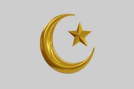
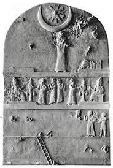
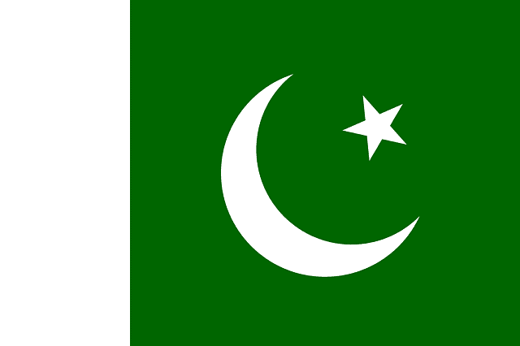

CRESCENT & STAR

Introduction
The crescent and star is a powerful and ancient symbol that has appeared across many cultures and civilizations throughout history. Though widely recognized today as an emblem of Islam, its origins and meanings extend far beyond one religion or region. The crescent moon and star is a symbol composed of a curved, waxing crescent (usually with the horns pointing upward or to the side) and a single star positioned within or near the crescent. It has become a widely known icon, especially associated with the Islamic world, national flags, and ancient religious and astronomical symbolism
Literary
The star and crescent symbol itself is very ancient, dating back to early Sumerian civilization, where it was associated with the sun God and moon Goddess (one early appearance dates to 2100 BCE), and later, with Goddesses Tanit and even Diana. The symbol remained in near constant use, and was eventually adopted into the battle-standard of the Ottoman Dynasty, who are mainly responsible for its association with Islam. As the Dynasty was also the political head of the faith, it was inevitable that their symbol would be associated with Islam as well. It should be noted that there is no mention of such a symbol in the Koran, the Holy book of Islam, nor is there any relationship between the crescent and star and the Prophet (whose flag was black and white, inscribed Nasr um min Allah, “with the help of Allah.")

The crescent and star symbol has represented Islam for centuries. Its history, however, is complicated. The symbol begins as a representation of the Greek colony, Byzantion, on the European side of the Bosphorus, in the seventh century BCE. From there it is picked up by the Pontic Kingdom, which briefly occupies the city. From that time Byzantion mints coins with the crescent and star, which are recognized throughout the Mediterranean as belonging to the city by the Bosphorus. Eventually the symbol appears on coins in the Sassanid Empire. With the Islamic conquest of Persia the Sassanid coins remain unchanged and continue to be minted as a means of exchange throughout the Middle East. In the Eastern Roman Empire, in the meantime, the symbol is resurrected in the flag of Constantinople. Red background represents the city; blue, the navy. The Ottoman Empire consciously adopts the symbol as it proclaims itself the ruler of Rome. The symbol however does not come to full prominence among the Ottoman rulers until the late eighteenth century. With the dissolution of their empire, many former Ottoman colonies, like Tunisia and Algeria, adopt the crescent and star as their own. In the twenty-first century the symbol is seen on many flags, like those of Pakistan, Malaysia and Singapore. Historically, however, the crescent and star remains the symbol of the city on the Golden Horn; for centuries, albeit, belonging to the East, and not the West.
History
Canaan
In the Late Bronze Age Canaan, star and crescent moon motifs are also found on Moabite name seals, indicating the symbolic importance of celestial imagery in the religious and political identity of the region. These motifs, often associated with astral deities, reflect a broader Semitic tradition where the moon (often represented by a crescent) was linked to the god Sin (or Yarikh)—the lunar deity worshiped in ancient Near Eastern cultures, including in Ugarit and parts of Canaan. Similarly, the star symbol was frequently associated with the goddess Ishtar (Astarte in the Canaanite context), a deity of fertility, war, and celestial authority. Archaeological findings from sites such as Beth-Shean, Hazor, and Ugarit have revealed artifacts—such as amulets, cylinder seals, and pottery—decorated with lunar and star symbols. These symbols were not merely decorative but were believed to carry protective and divine power, and their appearance on official seals suggests a sacralized kingship or divine endorsement of the ruling authority. Furthermore, the crescent and star may have also served calendrical or astronomical purposes, guiding agricultural cycles and ritual timing. Their recurrence across different Canaanite city-states and neighboring cultures underscores a shared symbolic lexicon that later influenced Aramaic, Nabatean.
Egypte
The Egyptian hieroglyph for “month” features a crescent above a star. This hieroglyph is a remnant of a lunar calendar which was replaced by a solar calendar by the mid-3rd millennium BC (however, the lunar calendar retained some religious functions).And the crescent moon and star symbol carries historical and cultural significance, often linked to deities and timekeeping. The crescent moon is associated with the moon god Thoth and the goddess Isis, representing wisdom, magic, and fertility.
Islam
Historically, there is no evidence that Muslims during the time of Muhammad used a symbol to express Islam. Since there are no images to represent God, there should be no symbol of faith.I discovered that the star and moon symbol did indeed belong to a pre-Islam people that worshiped the moon god Ur, and a few others. It also could have been for Diana who was the goddess of the moon in Ancient Greece.This moon and star was the pagan representation of this deity that they believed controlled the moon and stars.
The Ottoman Turk Empire which was founded in 1229 AD was growing to be a large militant force. The symbol of the moon and star became affiliated with the Muslim world as the flag was used to show conquest on certain land territory. Keep in mind this was about 629 years after Islam was re-established in the Middle East. “When the Turks conquered Constantinople (Istanbul) in 1453, they adopted the city’s existing flag and symbol that we see today. Legend holds that the founder of the Ottoman Empire, Osman, had a dream in which the crescent moon stretched from one end of the earth to the other. Taking this as a good omen, he chose to keep the crescent and make it the symbol of his dynasty.”
The star and crescent symbol has been strongly associated with Islam, but it doesn’t have any spiritual connection to the faith. While Muslims don’t use it when worshipping, it has become a form of identification for the faith. The symbol was only used as a counter-emblem to the Christian cross during the Crusades and eventually became an accepted symbol. Some Muslim scholars even say that the symbol was pagan in origin and using it in worship constitutes idolatry.
The Quran includes a chapter on The Moon and The Star, which describes the crescent moon as a harbinger of the Day of Judgment, and the star as a god worshipped by pagans. The religious text also mentions that God made the sun and the moon as a means of reckoning time. However, these don’t contribute to the spiritual meaning of the symbol.
Another interpretation of the five-pointed star is that it’s thought to symbolize the five pillars of Islam, but this is just an opinion of some observers. This likely stemmed from the Ottoman Turks when they used the symbol on their flag, but the five-pointed star wasn’t standard and still isn’t standard on the flags of Muslim countries today.

The Byzantine
One of the leading civilizations in the world, the Byzantine Empire began as the city of Byzantium. Since it was an ancient Greek colony, Byzantium recognized several Greek gods and goddesses, including Hecate the goddess of the moon. As such, the city adopted the crescent moon as its symbol. By 330 CE, Byzantium was chosen by Roman Emperor Constantine the Great to be the site of a New Rome, and it became known as Constantinople. A star, a symbol dedicated to Virgin Mary, was added to the crescent symbol after the emperor made Christianity the official religion of the Roman Empire.
Research
Crescent and Star: The Most Popular "Islamic" Symbol has a Fundamentally Different Origin
On the Balkan Peninsula, the motif of the crescent and star, and/or three crescents, appears long before the advent of Islam. Interestingly, motifs similar to the Illyrian coat of arms also appear on the coats of arms of cities in countries where Slavic peoples live (or lived): Poland, Slovakia, Belarus, Ukraine, Russia, Germany, and others. You might wonder why a crescent appears on a Slavic coat of arms: The crescent and star is an ancient emblem, present in every ancient "pagan" culture. It is a very powerful symbol related to the third eye (awareness) , as well as the feminine aspect of essence, which in Slavic-Aryan Vedism.When you see a crescent and star or three crescents on ancient emblems, know that these are Vedic, Aryan symbols that have nothing to do with Islam. Additionally, the emblem of "three moons" testifies to the ancientness of forgotten history.